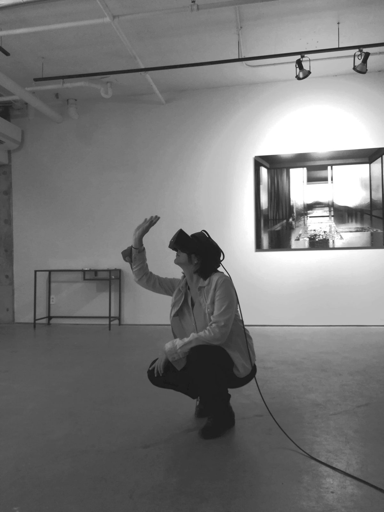
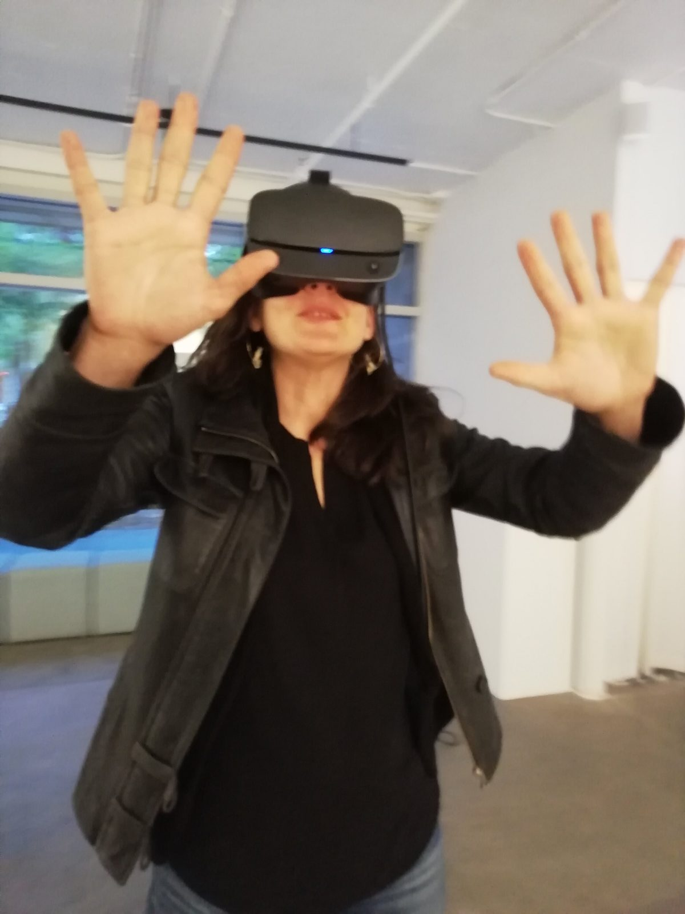
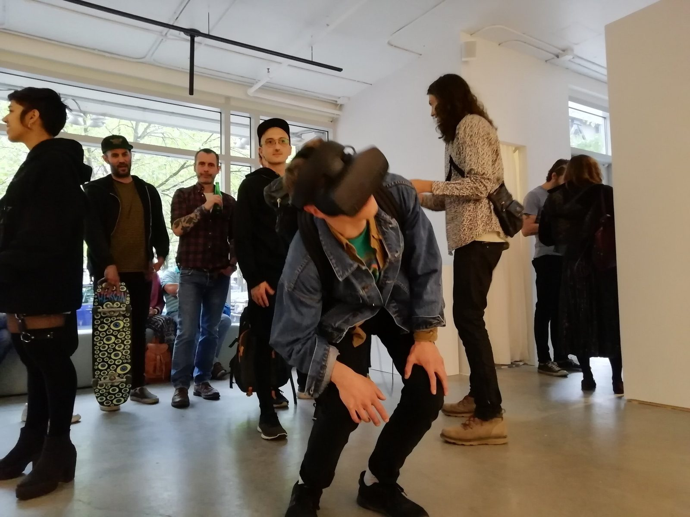
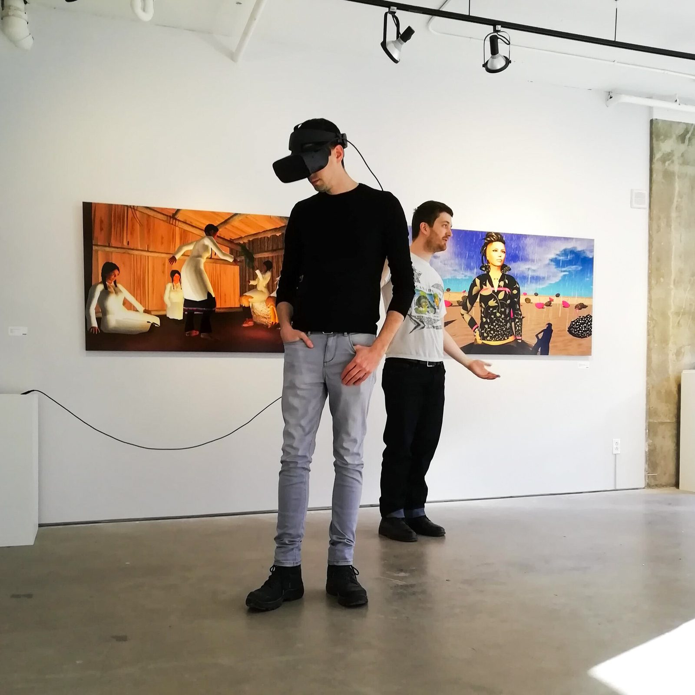
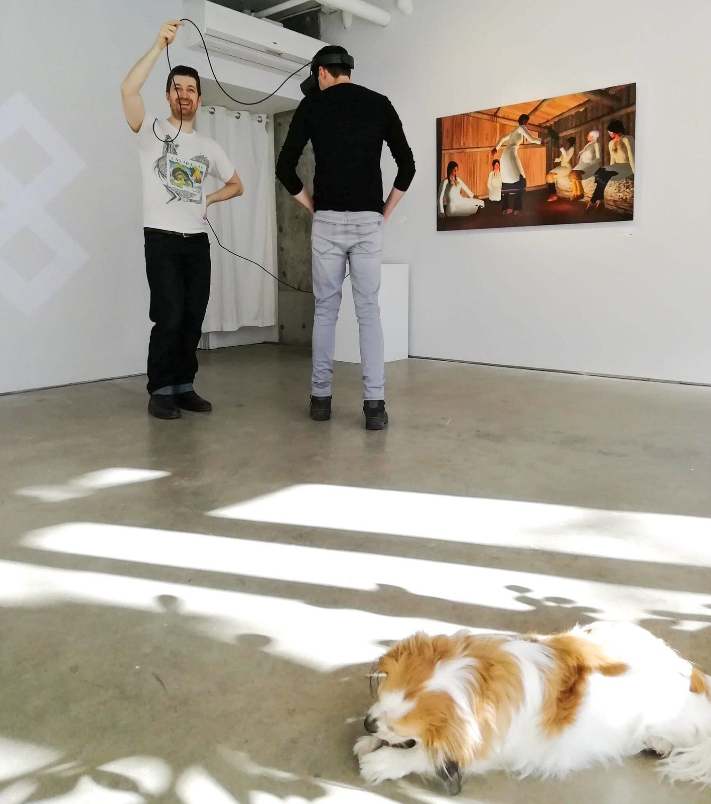

The inaugural room of the Light Gallery, an underground virtual museum where the architecture is shaped entirely by the behaviour of light.
La salle inaugurale de la Light Gallery, un musée virtuel souterrain dont l’architecture est entièrement façonnée par le comportement de la lumière.
Salvo is the first room published from the Light Gallery, a long-term project to build a virtual art museum in which each room houses a single hand-sculpted sculpture, and the architecture itself is designed as a machine for photons. The gallery’s philosophy is simple: light should be the primary experience, and the architecture should serve it unconditionally.
Salvo est la première salle dévoilée de la Light Gallery, un projet à long terme visant à bâtir un musée d’art virtuel où chaque salle abrite une seule sculpture façonnée à la main, et où l’architecture elle-même est conçue comme une machine à photons. La philosophie de la galerie est simple : la lumière doit être l’expérience première, et l’architecture doit la servir sans condition.
Freed from the constraints of gravity, material cost, and structural limitation, the room’s geometry is shaped entirely by how light will behave within it. Curved wall openings focus and soften daylight. A narrow skylight above creates a blade of illumination that sweeps across the sculpture as the virtual sun moves. The architecture is contextual, designed to produce dramatic indirect light scenarios that would be impossible to achieve in the physical world.
Affranchie des contraintes de la gravité, du coût des matériaux et des limites structurelles, la géométrie de la salle est entièrement modelée par la manière dont la lumière s’y comportera. Des ouvertures murales courbes concentrent et adoucissent la lumière du jour. Au-dessus, un puits de lumière étroit crée une lame de clarté qui balaie la sculpture au fil du déplacement du soleil virtuel. L’architecture est contextuelle, conçue pour produire de saisissants scénarios de lumière indirecte, impossibles à obtenir dans le monde physique.

The central sculpture is an explosion of gestural, swirling forms, hand-sculpted in VR using controllers as an extension of the arm. Each stroke is a physical movement recorded in digital space. The accumulation of thousands of gestures produces a form that is at once chaotic and considered, organic and intentional.
La sculpture centrale est une explosion de formes gestuelles et tourbillonnantes, sculptée à la main en réalité virtuelle, les manettes prolongeant le bras. Chaque trait est un mouvement physique consigné dans l’espace numérique. L’accumulation de milliers de gestes engendre une forme à la fois chaotique et réfléchie, organique et intentionnelle.
Within the room, the sculpture acts as a spatial puzzle for diffuse light. Photons entering through the skylight interact with the tangled mass of tendrils, tubes, and bulbous surfaces, scattering, nesting, and dying in the sculpture’s deep interior recesses. Through the movement of the sun, light bursts through the puzzle like a misty rainfall.
Dans la salle, la sculpture agit comme un casse-tête spatial pour la lumière diffuse. Les photons qui entrent par le puits de lumière rencontrent l’enchevêtrement de vrilles, de tubes et de surfaces bulbeuses ; ils s’y dispersent, s’y nichent et s’y éteignent dans les creux profonds de la sculpture. Au gré de la course du soleil, la lumière jaillit à travers le casse-tête telle une pluie brumeuse.

I want you to sense yourself sensing. To see yourself seeing.
Je veux que vous vous sentiez ressentir. Que vous vous voyiez voir.



The exhibition documentation reveals the involuntary response of the body. Visitors wearing the headset crouch beneath the sculpture’s weight. They reach up to touch surfaces that aren’t there. They fall, startled by scale. Some tried to lean on the virtual walls.
La documentation de l’exposition révèle la réaction involontaire du corps. Les visiteurs qui portent le casque se recroquevillent sous le poids de la sculpture. Ils tendent la main pour toucher des surfaces qui n’existent pas. Ils chancellent, saisis par l’échelle. Certains ont tenté de s’appuyer sur les murs virtuels.
Salvo was the first proof that hand-sculpted virtual architecture could produce genuine spatial experience at the intensity of physical space: awe, claustrophobia, vertigo, shelter.
Salvo a été la première preuve qu’une architecture virtuelle sculptée à la main pouvait produire une véritable expérience spatiale, avec l’intensité de l’espace physique : émerveillement, claustrophobie, vertige, refuge.


Salvo was first presented in VR at Galerie ELLEPHANT in Montreal, alongside large-format prints of the virtual space. The exhibition paired the immersive VR experience with its two-dimensional translation. Visitors moved between the prints on the walls and the headset in the centre of the gallery, seeing the same space from radically different perspectives.
Salvo a d’abord été présenté en réalité virtuelle à la Galerie ELLEPHANT, à Montréal, aux côtés de tirages grand format de l’espace virtuel. L’exposition mariait l’expérience immersive en VR à sa traduction en deux dimensions. Les visiteurs circulaient entre les tirages accrochés aux murs et le casque installé au centre de la galerie, découvrant le même espace sous des perspectives radicalement différentes.
The Light Gallery is designed as a slow release: one room every six to twelve months, each with a new sculpture and unique spatial character. After all rooms are complete, they will be assembled into a unified virtual museum, a slowly evolving symbiosis of VR art and architecture built over a decade.
La Light Gallery est conçue comme une parution lente : une salle tous les six à douze mois, chacune dotée d’une nouvelle sculpture et d’un caractère spatial propre. Une fois toutes les salles achevées, elles seront réunies en un musée virtuel unifié, une symbiose lentement évolutive d’art VR et d’architecture bâtie sur une décennie.